← Back to Projects
09 • Civic + Arena
Falcon Arena Concept
A civic arena where movement, spectacle and identity converge.
ICONIC FROM SKYLINE TO SEAT
Design Narrative
A civic arena is remembered twice: once from the skyline, and again in the clarity of the crowd journey.
Inspired by the falcon as a symbol of vision and strength, the arena creates a memorable civic silhouette and a clear event journey from plaza to seat.
Falcon wing canopy, desert bowl, perforated bronze skin, radial crowd flow and shaded public realm.
Falcon wing canopyDesert event bowlPerforated bronze skinRadial crowd flowShaded public realmVIP arrival
Strategic Lens — Civic Identity + Movement
How can a large event venue feel iconic at city scale and intuitive at human scale?
Use the falcon-inspired canopy as both civic silhouette and organizer of arrival.
A luminous event bowl, radial movement, shaded plazas, bronze skin and VIP hospitality align spectacle with operations.
A winged civic silhouette guides people from public plaza to event bowl.
The arena becomes a destination when identity and operational clarity reinforce each other.
Curated Visual Gallery
Falcon Arena Concept
A visual sequence of architecture, atmosphere, movement and detail.

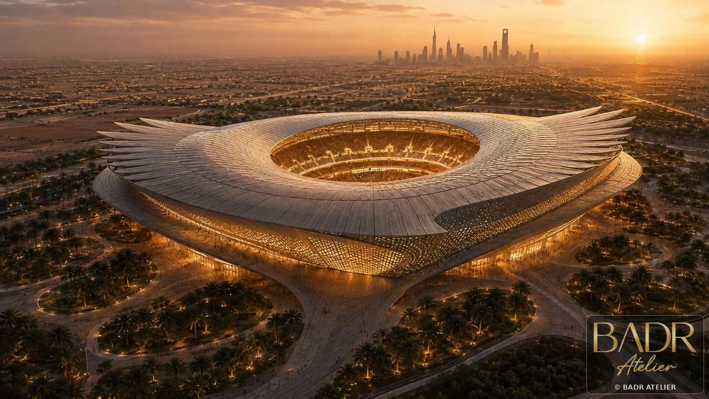
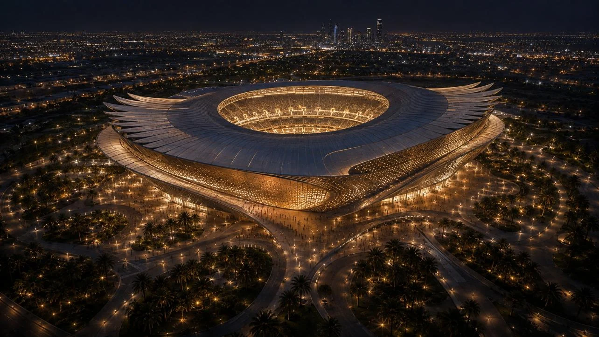
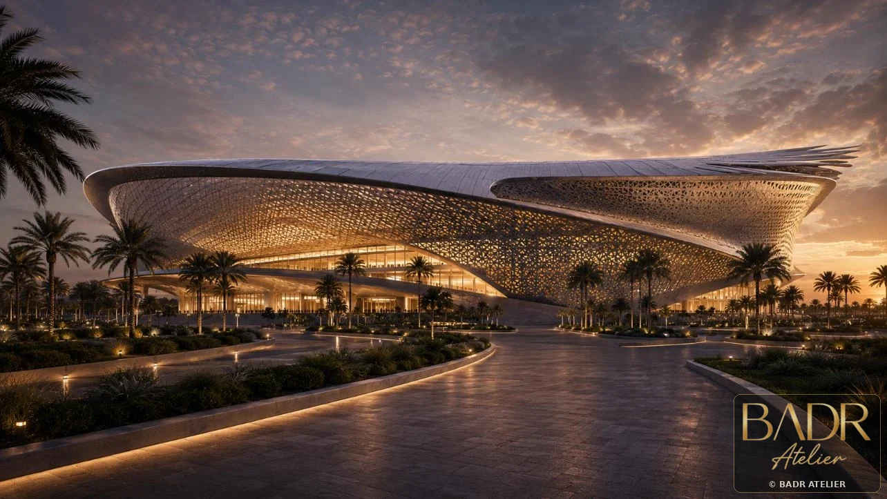
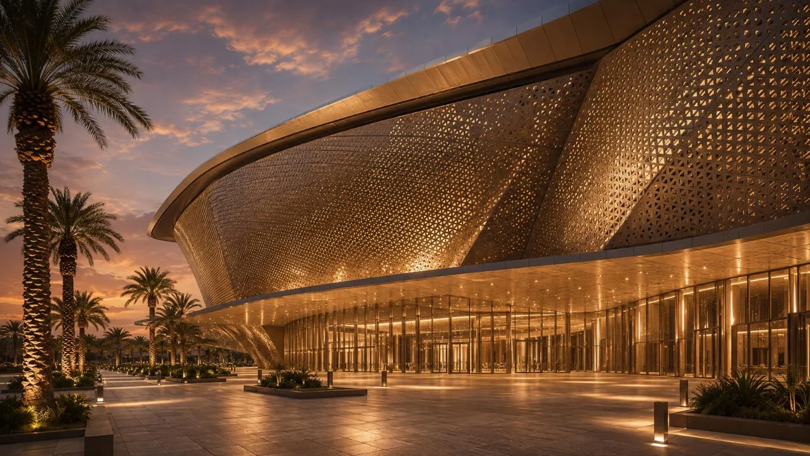
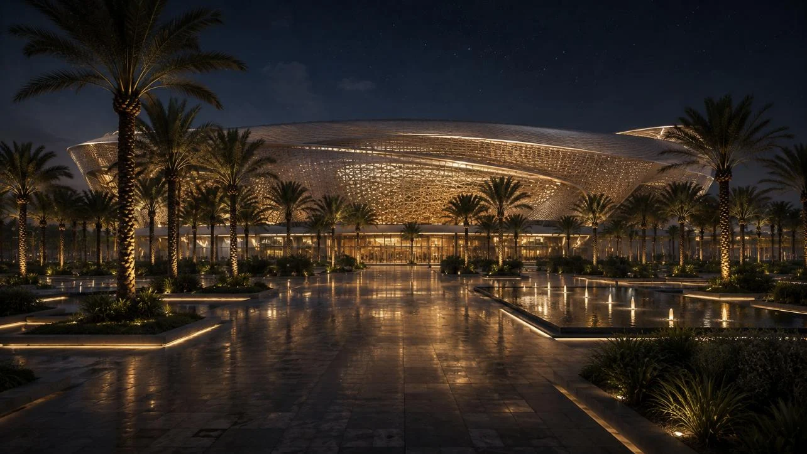
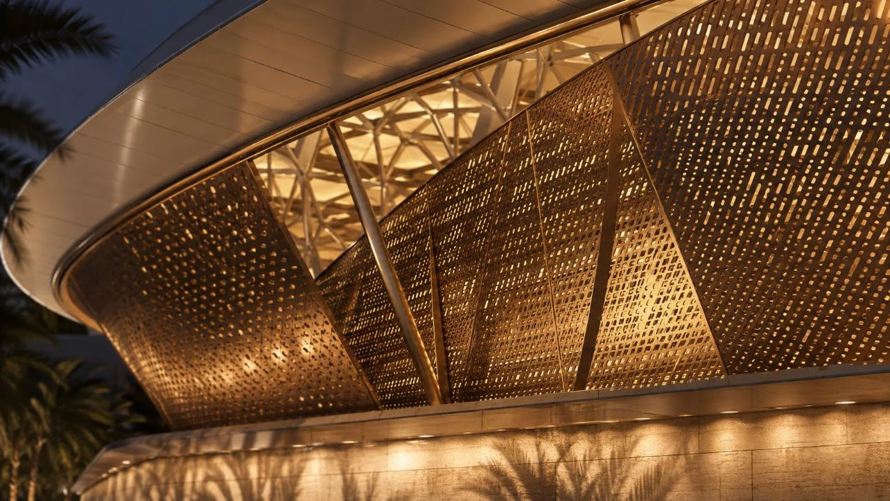
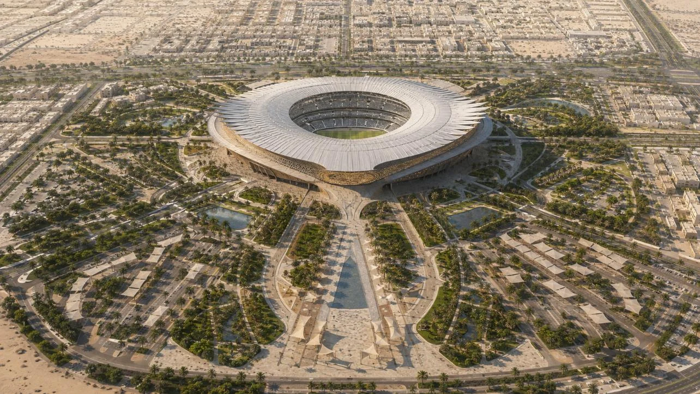
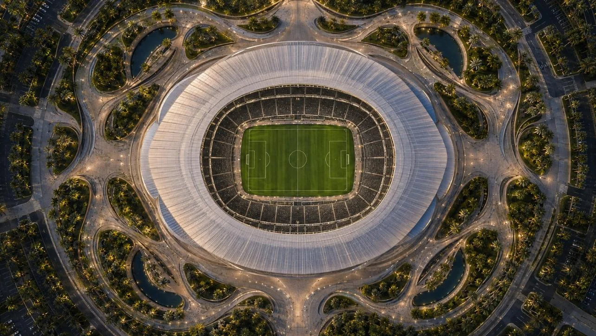
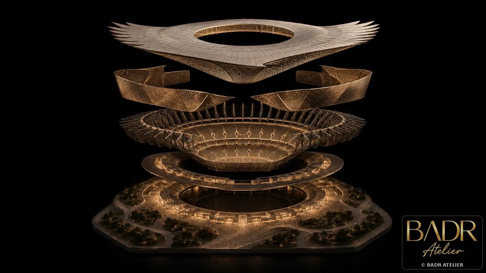
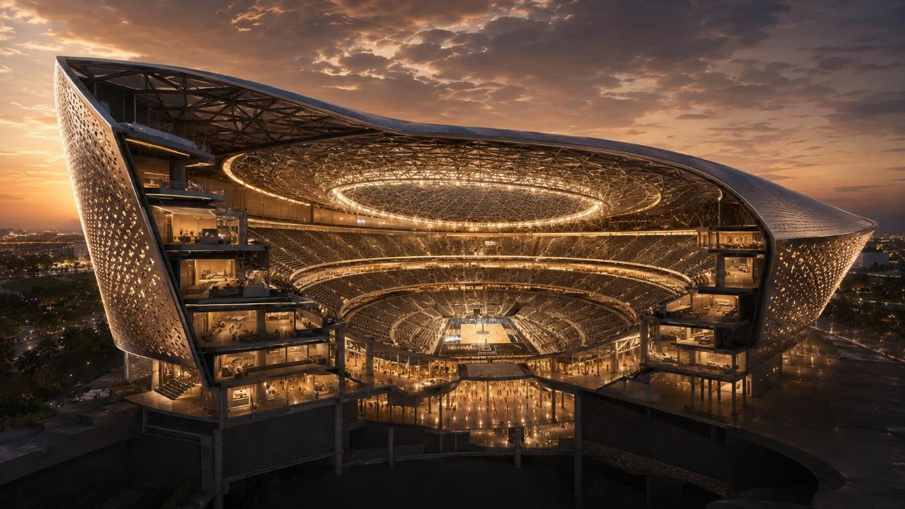
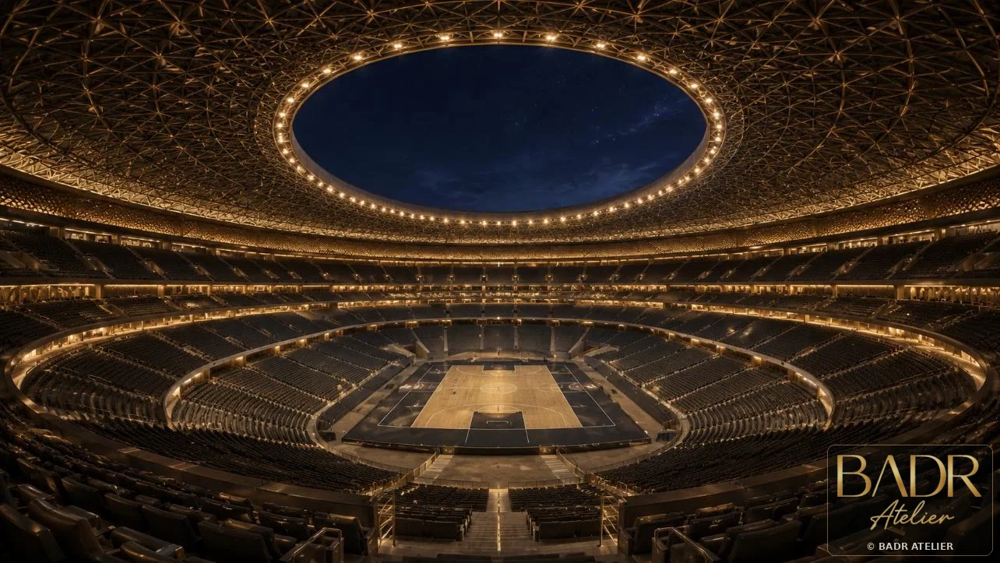
Key Features
- Falcon wing canopy
- Desert event bowl
- Perforated bronze skin
- Radial crowd flow
- Shaded public realm
- VIP arrival
- Premium hospitality
Spaces + Experiences
- Event bowl
- Public plazas
- Concourses
- Suites
- VIP lounges
- Hospitality terraces